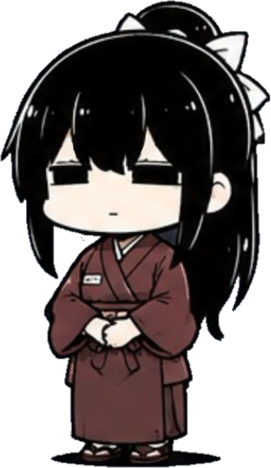
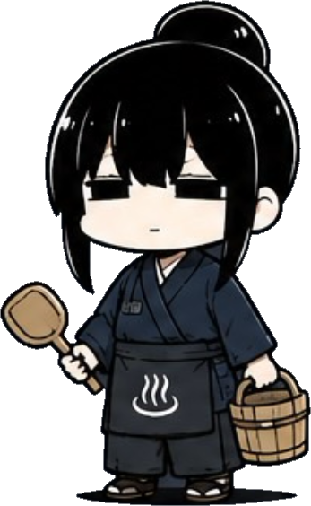
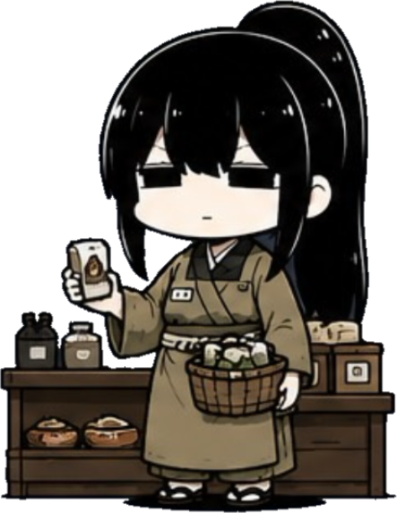
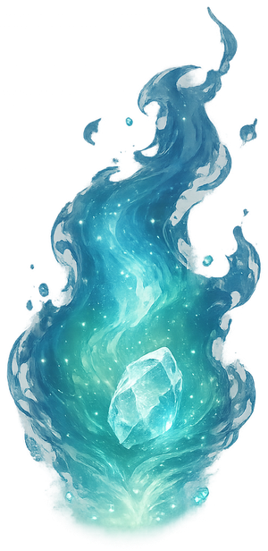
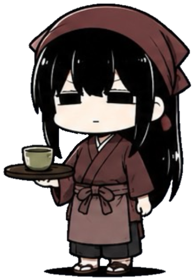
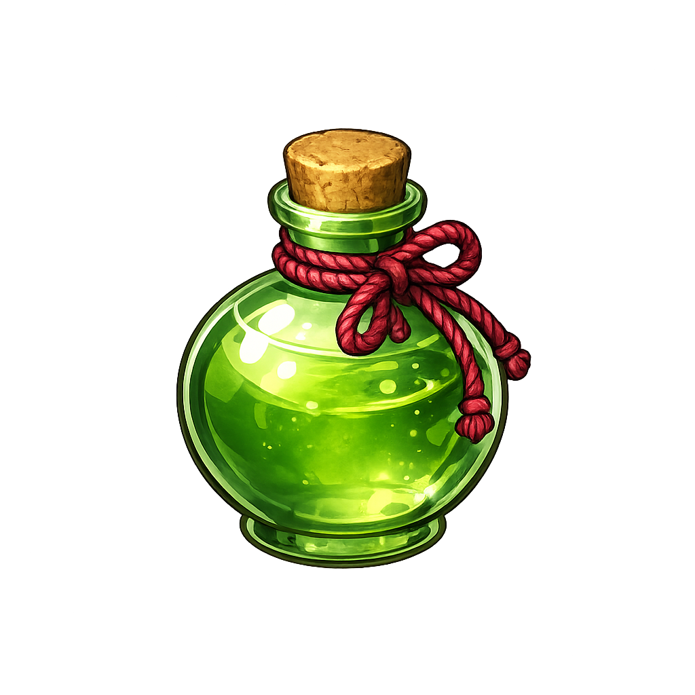
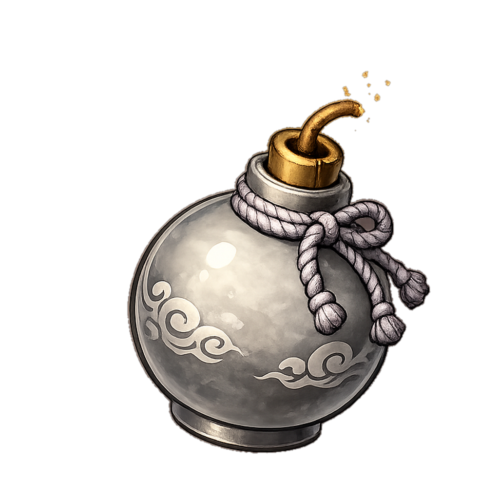

設定
製作者より
温泉村物語を遊んでいただき、
本当にありがとうございます。
このゲームは私にとって
初めて制作した作品です。
ゲーム開発を学びながら、
少しずつ制作を進めています。
そのため、
まだバグや調整不足な部分が
残っているかもしれません。
今後もアップデートを続け、
より面白い作品へ育てていきます。
遊んでくださった皆様、
本当にありがとうございます。
―― 制作者 けい
職業を選んでください
湯乃里温泉
宿屋

0G
🏮HPとMPを全回復
「宿泊する」を押すと仲間全員が宿に泊まります(1人10G)。
新しい仲間を雇う
パーティ編成
支援物資
合計で最大個まで持っていけます。
0G
野営具は最大つまで持てます。
出発メンバーを選ぶ
タップで出発パーティに入れる(最大4人)
-
鍛冶屋
0G
職業別 武器・防具
一度買えばその職業全員、永久に効果があります。
温泉

0G
温泉でストレスを癒します。入浴中のキャラは翌朝まで出発できません。
売店

0G
1から取り直しできる
神社
魂のかけらを奉納して祈願すると、特別なお守りを授かれます。お守りはパーティ全体に効果があり、同時に個まで着けられます。

所持している魂のかけら：0個ボスや中ボスが低確率で落とす「魂の塊」を捧げると、レア度⭐️⭐️⭐️以上のお守りだけを授かれます。
お守り一覧(装備中 0/)
増築
0G
🏠家 Lv
🏯奉行所
本日の依頼(毎日入れ替わります)
茶屋

買い物


お茶菓子
買うと回復薬と同じ支援物資として持ち歩けます。
海の村
潮風宿
0G
🏮HPとMPを全回復
「宿泊する」を押すと仲間全員が宿に泊まります(1人10G)。
新しい仲間を雇う
湯乃里温泉
温泉でストレスを癒します。入浴中のキャラは翌朝まで出発できません。
山伏の里
霧の宿
0G
🏮HPとMPを全回復
「宿泊する」を押すと仲間全員が宿に泊まります(1人10G)。
新しい仲間を雇う
雲海の湯
温泉でストレスを癒します。入浴中のキャラは翌朝まで出発できません。
出発
支援物資
合計で最大個まで持っていけます。
0G
野営具は最大つまで持てます。
行き先を選ぶ
冒険の記録
獲得経験値
ゲームオーバー
所持金が底をつき、動ける仲間もいなくなってしまった…
この村での物語はここで終わる。